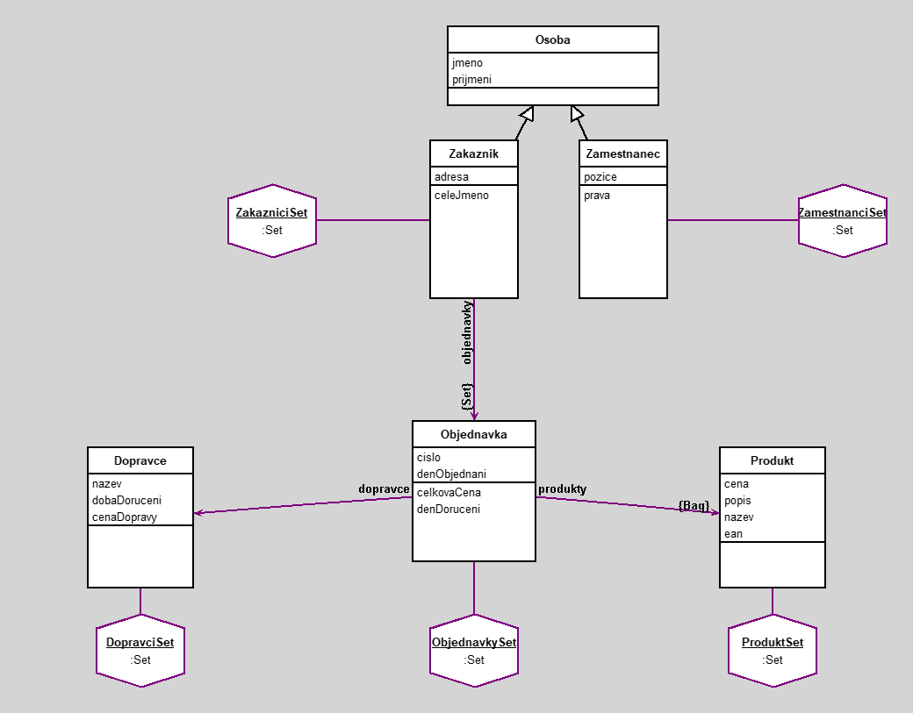

Eshop
author(s): Jiri Koci
Tento projekt ma predstavovat zaklad eshopu. V tomto eshopu si zakaznik muze objednat ruzne produkty. Tyto produkty je pote mozne videt v instanci objednavky a je mozne si vybrat ruzne dopravce pro doruceni teto objednavky. Jednotlivi dopravci maji ruznou dobu doruceni a cenu. V objednavce se pote vypocita celkova cena vsech produktu a ceny dopravy a take den doruceni, kdy by zakaznik mel objednavku ocekavat. V eshopu pracuji zamestnanci. Zamestnanec muze byt zaroven i zakaznik eshopu, jelikoz se zakaznici a zamestnanci ukladaji v oddelenych kolekcich. Zamestnanci maji ruzna opravneni podle jejich pozice v tomto eshopu. Podle techto opravneni maji pristup k ruznym datum a majetku firmy.
Workspace
" ========= DOTAZY ========= "
"Kdo si objednal objednavku cislo 214"
ZakazniciSet select: [:zak | zak objednavky anySatisfy: [:o | o cislo = 214]]
"Objednavky ve kterych bylo objednano triko"
ObjednavkySet select: [:o | o produkty anySatisfy: [:prod | prod nazev = 'Triko']]
"Zakaznici kteri meli objednavku s cenou vyssi nez 500"
ZakazniciSet select: [:zak | zak objednavky anySatisfy: [:o | o celkovaCena > 500]]
" ========= PRAVIDLA ========= "
"Vsechny produkty maji EAN"
(ProduktSet select: [:prod | prod ean = '']) isEmpty
"Vsichni zamestnanci maji pozici"
(ZamestnanciSet select: [:zam | zam pozice = '']) isEmpty
"Kazda objednavka ma alespon 1 produkt"
(ObjednavkySet select: [:o | o produkty size = 0]) isEmpty
Workspace Objects
-
DopravciSet :Set
-
ObjednavkySet :Set
-
ProduktSet :Set
-
ZakazniciSet :Set
-
ZamestnanciSet :Set
Script
"---- ZAMESTNANCI ----"
zam1 := Zamestnanec new.
zam1 jmeno: 'Radek'; prijmeni: 'Geier'; pozice: 'CEO'.
zam2 := Zamestnanec new.
zam2 jmeno: 'Zdenek'; prijmeni: 'Skopik'; pozice: 'IT'.
zam3 := Zamestnanec new.
zam3 jmeno: 'Milan'; prijmeni: 'Kugler'; pozice: 'Web Specialist'.
zam4 := Zamestnanec new.
zam4 jmeno: 'Ludmila'; prijmeni: 'Sura'; pozice: 'Manazerka'.
zam5 := Zamestnanec new.
zam5 jmeno: 'Michal'; prijmeni: 'Janku'; pozice: 'Pracovnik skladu'.
zam6 := Zamestnanec new.
zam6 jmeno: 'Jiri'; prijmeni: 'Florian'; pozice: 'Pracovnik skladu'.
zam7 := Zamestnanec new.
zam7 jmeno: 'Lucie'; prijmeni: 'Carhounova'; pozice: 'Personalistka'.
ZamestnanciSet := Set new.
ZamestnanciSet add: zam1; add: zam2; add: zam3; add: zam4; add: zam5; add: zam6; add: zam7.
"---- PRODUKTY ----"
prod1 := Produkt new.
prod1 nazev: 'Triko'; popis: 'Je to triko.'; cena: 125; ean: 9999999999999.
prod2 := Produkt new.
prod2 nazev: 'Mikina'; popis: 'Je to mikina.'; cena: 499; ean: 8888888888888.
prod3 := Produkt new.
prod3 nazev: 'Teplaky'; popis: 'Jsou to teplaky.'; cena: 386; ean: 7777777777777.
prod4 := Produkt new.
prod4 nazev: 'Ponozky'; popis: 'Jsou to ponozky.'; cena: 29; ean: 6666666666666.
prod5 := Produkt new.
prod5 nazev: 'Rukavice'; popis: 'Jsou to rukavice.'; cena: 150; ean: 6969696969420.
ProduktSet := Set new.
ProduktSet add: prod1; add: prod2; add: prod3; add: prod4; add: prod5.
"---- DOPRAVCI ----"
dop1 := Dopravce new.
dop1 nazev: 'Zasilkovna'; dobaDoruceni: 3; cenaDopravy: 79.
dop2 := Dopravce new.
dop2 nazev: 'Ceska Posta'; dobaDoruceni: 30; cenaDopravy: 59.
dop3 := Dopravce new.
dop3 nazev: 'PPL'; dobaDoruceni: 4; cenaDopravy: 89.
DopravciSet := Set new.
DopravciSet add: dop1; add: dop2; add: dop3.
"---- OBJEDNAVKY ----"
o1 := Objednavka new.
o1 cislo: 213; dopravce: dop1; denObjednani: '12 12 2023' asDate.
o1 produkty add: prod1; add: prod3; add: prod4.
o2 := Objednavka new.
o2 cislo: 124; dopravce: dop3; denObjednani: '4 1 2024' asDate.
o2 produkty add: prod2; add: prod5.
o3 := Objednavka new.
o3 cislo: 154; dopravce: dop1; denObjednani: '2 4 2024' asDate.
o3 produkty add: prod4; add: prod5.
o4 := Objednavka new.
o4 cislo: 521; dopravce: dop1; denObjednani: '3 1 2024' asDate.
o4 produkty add: prod1.
o5 := Objednavka new.
o5 cislo: 652; dopravce: dop3; denObjednani: '1 12 2024' asDate.
o5 produkty add: prod1; add: prod4.
o6 := Objednavka new.
o6 cislo: 222; dopravce: dop2; denObjednani: '4 19 2024' asDate.
o6 produkty add: prod2; add: prod4.
o7 := Objednavka new.
o7 cislo: 123; dopravce: dop3; denObjednani: '1 25 2024' asDate.
o7 produkty add: prod1; add: prod3.
o8 := Objednavka new.
o8 cislo: 214; dopravce: dop3; denObjednani: '1 12 2024' asDate.
o8 produkty add: prod1.
ObjednavkySet := Set new.
ObjednavkySet add: o1; add: o2; add: o3; add: o4; add: o5; add: o6; add: o7; add: o8.
"---- ZAKAZNICI ----"
zak1 := Zakaznik new.
zak1 jmeno: 'Karel'; prijmeni: 'Pepik'; adresa: 'Pepikov 12 42069'.
zak1 objednavky add: o1; add: o2; add: o5; add: o8.
zak2 := Zakaznik new.
zak2 jmeno: 'Josef'; prijmeni: 'Pepik'; adresa: 'Pepikov 12 42069'.
zak2 objednavky add: o3.
zak3 := Zakaznik new.
zak3 jmeno: 'Jan'; prijmeni: 'Novak'; adresa: 'Pepikov 13 42069'.
zak3 objednavky add: o4; add: o7.
zak4 := Zakaznik new.
zak4 jmeno: 'Arnost'; prijmeni: 'Vesely'; adresa: 'Ritka 42 25203'.
zak4 objednavky add: o6.
ZakazniciSet := Set new.
ZakazniciSet add: zak1; add: zak2; add: zak3; add: zak4.
Diagram

Classes
Osoba
|
instance variables
jmeno :String
prijmeni :String
|
methods
initialize
jmeno
jmeno:
prijmeni
prijmeni:
|
|
Tato trida je vyuzita aby svym potomkum "Zamestnanec" a "Zakaznik" predala instancni promenne "jmeno" a "prijmeni".
|
code of non-accessing methods:
Produkt
|
instance variables
cena :Number
ean :Number
nazev :String
popis :String
|
methods
cena
cena:
ean
ean:
initialize
nazev
nazev:
popis
popis:
|
|
Tato trida obsahuje kompletni info produktu:
- v inst. prom. "cena" se nachazi cena jednotlivych instanci teto tridy (produktu)
- v inst. prom. "popis" je podrobne popsan kazdy produkt
- inst. prom. "nazev" je vyuzita pro pojmenovani kazdeho produktu
- "ean" je inst. prom., ktera obsahuje hodnotu EANu kazdeho produktu
|
code of non-accessing methods:
Dopravce
|
instance variables
cenaDopravy :Number
dobaDoruceni :Number
nazev :String
|
methods
cenaDopravy
cenaDopravy:
dobaDoruceni
dobaDoruceni:
initialize
nazev
nazev:
|
|
Tato trida obsahuje informace o dopravci:
- inst. prom. "nazev" obsahuje nazvy jednotlivych instanci teto tridy (dopravcu)
- isnt. prom. "dobaDoruceni" urcuje dobu doruceni ve dnech
- inst. prom. "cenaDopravy" urcuje cenu dopravy jednotlivych dopravcu
|
code of non-accessing methods:
Objednavka
|
instance variables
cislo :Number
denObjednani :Date
dopravce :Object
produkty :Bag
|
methods
celkovaCena
cislo
cislo:
denDoruceni
denObjednani
denObjednani:
dopravce
dopravce:
initialize
produkty
|
|
Tato trida obsahuje kompletni data objednavky:
- inst. prom . "cislo" je cislo objednavky vyuzitelne pro dohledani jednotlivych instanci teto tridy (objednavek)
- objekt "dopravce" propojuje asociaci objednavku s jednim vybranym dopravcem ktereho si zakaznik zvolil
- bag "produkty" propojuje asociaci objednavku s kolekci produktu, ktere si zakaznik objednal
- inst. prom. "denObjednani" je datum uzavreni objednavky, ktere je vyuzito v metode "denDoruceni" pri kalkulaci dne, kdy ma byt objednavka dorucena
- metoda "celkovaCena" scita celkovou cenu vsech produktu v jednotlivych instancich teto tridy a cene doruceni ktera je zavisla na zvolenem dopravci
|
code of non-accessing methods:
-
celkovaCena
| cp sumCP |
sumCP := 0.
cp := produkty collect: [:prod | prod cena].
cp do: [:cena | sumCP := sumCP + cena].
^sumCP + dopravce cenaDopravy
-
denDoruceni
^denObjednani addDays: dopravce dobaDoruceni
-
initialize
"generated by Daskalos"
super initialize.
cislo := nil.
produkty := Bag new.
dopravce := nil.
denObjednani := nil.
Zamestnanec
|
instance variables
pozice :String
|
methods
initialize
pozice
pozice:
prava
|
|
Tato trida dedi od tridy "Osoba" instancni promenne "jmeno" a "prijmeni" kvuli identifikaci v praci a dale ma instancni promennou "pozice", ktera zamestnancum pote pomoci metody "prava" prideluje opravneni k ruznym vecem.
|
code of non-accessing methods:
-
initialize
"generated by Daskalos"
super initialize.
pozice := nil.
-
prava
pozice = 'Web Specialist' ifTrue: [^'uprava stranek'].
pozice = 'CEO' ifTrue: [^'vsechna'].
pozice = 'Personalistka'
ifTrue: [^'pristup k datum zamestnancu a zakazniku + prace se smlouvami'].
pozice = 'IT'
ifTrue: [^'sprava firemnich pristroju (servery, pracovni PC, ...)'].
pozice = 'Manazerka'
ifTrue:
[^'pristup k datum zamnestnancu a prodeje zbozi + rozvrzeni pracovni doby + pridelovani ukolu'].
pozice = 'Pracovnik skladu' ifTrue: [^'manipulace se zbozim']
Zakaznik
|
instance variables
adresa :String
objednavky :Set
|
methods
adresa
adresa:
celeJmeno
initialize
objednavky
|
|
Tato trida dedi od tridy "Osoba" instancni promenne "jmeno" a "prijmeni" kvuli spravne identifikaci (tyto promenne dale spojuje pro jednodussi vyuziti metoda "celeJmeno"), dale ma instancni promennou "adresa" z duvodu dopravy na spravne misto a set "objednavky", ktera propojuje kazdeho zakaznika se vsemi jeho objednavkami.
|
code of non-accessing methods:
Links
Data file and
class source.
Generated by Daskalos - Object Modeling Tutor (C) 2006 V. Merunka
May 2, 2024